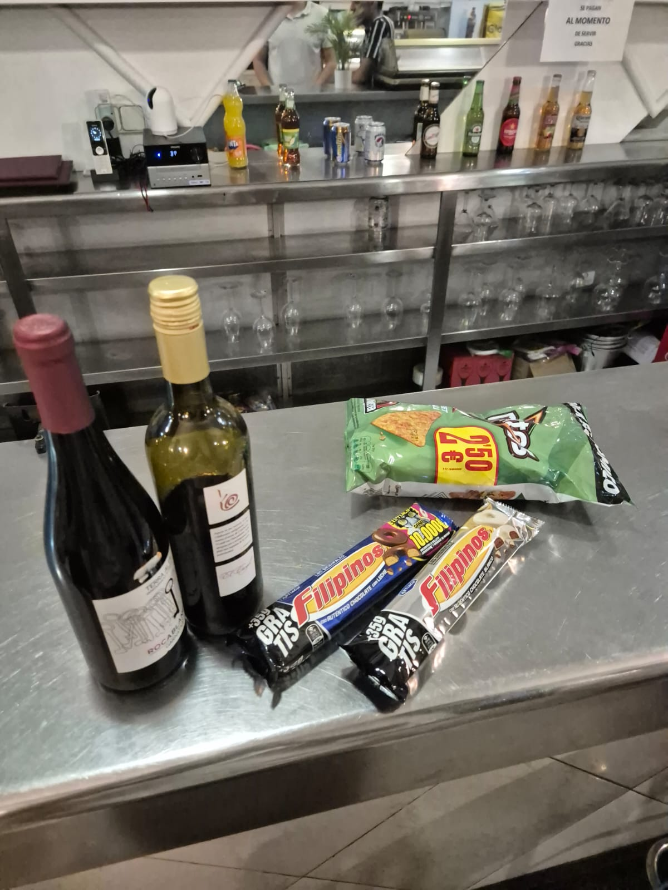
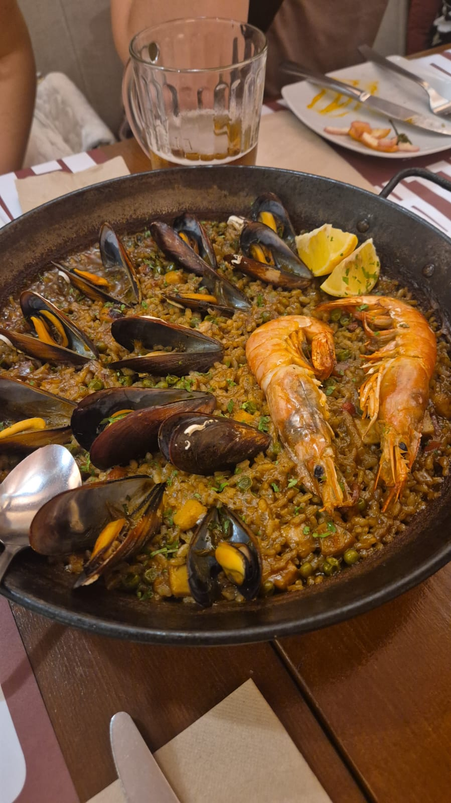
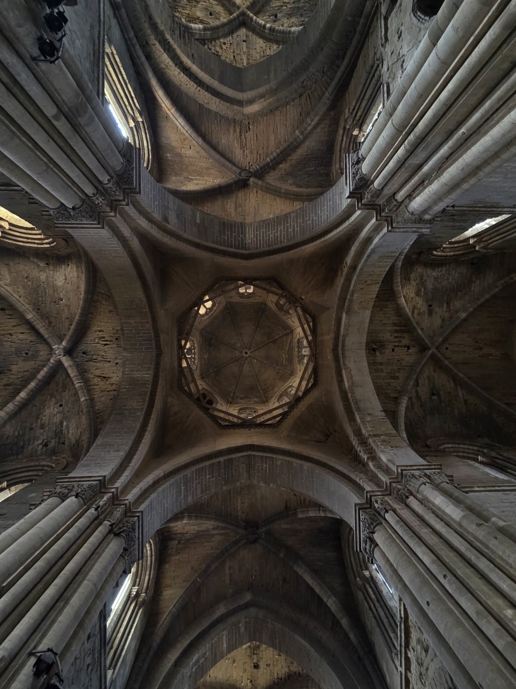
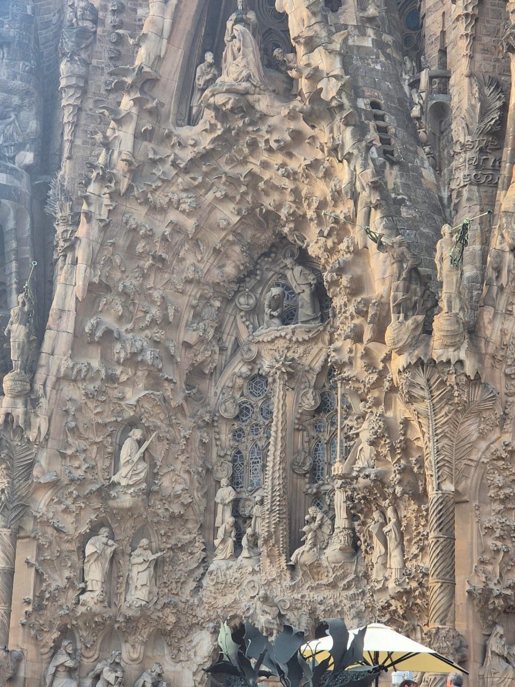

My time in Catalonia was filled with rich cultural experiences that significantly developed my intercultural competence. Through immersion in Spanish and Catalan culture, I gained deeper understanding of cultural differences, communication styles, and collaborative approaches.
Key Intercultural Competencies Developed
- Cultural Self-Awareness: Reflecting on my own South African cultural background and recognizing how it influences my perceptions, work style, and communication patterns
- Adaptive Communication: Learning to adjust my direct communication style to align with Spanish indirect communication preferences, particularly in professional settings
- Perspective-Taking: Understanding how Catalan regional identity differs from broader Spanish identity, and respecting the historical and political context behind these distinctions
- Cultural Empathy: Developing genuine curiosity and openness when encountering different approaches to work-life balance, meal times, and social interactions
- Tolerance for Ambiguity: Becoming comfortable with the less structured, more flexible approach to time and scheduling common in Spanish culture
Arrival & Cultural Adjustment
After saying goodbye to friends at the Blue Collar Stayokay hostel in the Netherlands, I traveled to Barcelona and then by train to Lleida—a beautiful 3-hour journey through Catalan countryside. My accommodation in Lleida was the best of the entire trip, providing a comfortable base for exploration.
Cultural Learning: The transition from Dutch to Spanish culture required immediate adaptation. I noticed differences in meal times (much later than I was used to), communication styles (more indirect and relationship-focused), and daily rhythms (afternoon siestas and late-night activities). This challenged my assumptions about "normal" routines and taught me flexibility.

Culinary Culture as Cultural Gateway
Food became a gateway to understanding Spanish culture. I enjoyed the best burger of my trip at a Venezuelan restaurant (highlighting Spain's multicultural demographics), tried authentic paella in Barcelona, experienced my first sangria, and even discovered unique items like a banana burger.
Skills Applied: I practiced cultural curiosity by actively trying new foods and asking about their significance. I learned that meals in Spain are social events, not just functional eating—this taught me about the Spanish value of sobremesa (lingering after meals for conversation). I adapted my schedule to embrace late dinners (9-10 PM), demonstrating behavioral flexibility.

Barcelona Weekend: Cross-Cultural Encounters
My Saturday in Barcelona was unforgettable and culturally enriching. Starting at the iconic Sagrada Família, I walked through the city discovering tourist destinations and stumbled upon a magical moment—a local band playing outside a church where locals invited strangers to dance traditional dances.
Intercultural Analysis: This spontaneous invitation to dance demonstrated the Spanish cultural value of inclusivity and hospitality toward strangers. Where some cultures might keep public spaces more reserved, Spanish culture encourages public interaction and celebration. I initially felt hesitant (reflecting my own cultural background's more reserved public behavior), but participating taught me about stepping outside comfort zones as a path to cultural understanding.
After trying paella and other Spanish dishes, I made my way through crowds and festivals to the beach, passing the Christopher Columbus statue pointing out to sea. Swimming in the Mediterranean and relaxing on the crowded beach was a perfect end to an adventurous day.
Reflection: The crowded beach highlighted different cultural attitudes toward personal space and privacy. I observed how Spanish beachgoers were comfortable with close proximity, loud conversations, and communal enjoyment—contrasting with more individualistic cultures that prioritize personal space bubbles.
Historical Context & Regional Identity
I explored Lleida's rich history through visits to the cathedral on the hill, learning about the region's medieval past. Morning runs took me past the castle at sunrise, providing breathtaking photo opportunities and a peaceful start to busy days.
Cultural Competency Growth: Learning about Catalan history helped me understand the importance of regional identity in Spain. I discovered that Catalonia has its own language, traditions, and political history. This taught me to avoid cultural generalizations—"Spanish culture" is not monolithic. I learned to ask questions like "Is this a Spanish tradition or specifically Catalan?" showing cultural sensitivity and awareness of complexity.

Social Integration & Cultural Participation
I immersed myself in local culture by attending multiple festivals in Lleida, including a memorable "boat ride" experience. I visited a bar on a hilltop next to a castle, participated in an exciting Wild West themed escape room, and witnessed a powerful protest about the Israel-Palestine conflict.
Skills Demonstrated:
- Cultural Engagement: Actively participating in festivals rather than observing as a tourist
- Political Awareness: Witnessing the protest showed me how Spanish society engages with global issues. Rather than avoiding the situation, I observed respectfully, learning about Spanish civic engagement and freedom of expression
- Social Adaptability: The escape room with international peers required navigating different problem-solving styles and communication approaches under time pressure
Collaborative Work: Intercultural Teamwork Skills
Working closely with Spanish students on our IoT interface project was perhaps the most significant intercultural learning experience. Daily interactions revealed important cultural differences in work approaches:
- Time Perception: I learned about polychronic time orientation (flexible, multi-tasking approach) vs. my more monochronic (linear, deadline-focused) style. Spanish teammates were comfortable starting meetings late or extending discussions—initially frustrating, but I learned this reflected relationship-priority over strict schedules.
- Communication Styles: Spanish communication tends to be more high-context (implicit, relationship-based) while I was accustomed to more low-context (explicit, direct) communication. I adapted by paying more attention to non-verbal cues, tone, and relationship dynamics rather than just verbal content.
- Hierarchy and Decision-Making: I observed more collectivist decision-making patterns where group consensus was valued over individual initiative. This taught me patience and the value of building group buy-in.
- Conflict Resolution: When disagreements arose about design choices, I noticed Spanish teammates preferred indirect conflict resolution, maintaining harmony over confrontation. I learned to frame feedback more diplomatically and focus on relationship preservation.
Applied Strategy: I consciously practiced cultural intelligence (CQ)—observing behavioral patterns, asking clarifying questions about preferences, and adapting my own behavior. For example, I started meetings with personal check-ins (rather than diving straight into tasks), respected lunch breaks as sacred social time, and learned to "read between the lines" when feedback was given indirectly.


Meeting up with fellow global minor students from other countries created a supportive international community. Morning runs together, late-night festival explorations, and collaborative work sessions strengthened our bonds across cultures. These interactions taught me about third culture building—creating shared norms and practices that honor multiple cultural backgrounds rather than privileging one culture over others.
Journey to Austria: Crisis Management Across Cultures
Our departure was an adventure itself—one student almost lost his bag on a train, we nearly missed our connection at the airport, but with help from fellow students at our next accommodation, we successfully made it to Austria.
Intercultural Learning: This stressful situation revealed cultural differences in stress responses and problem-solving. Some teammates became more emotional and expressive (culturally appropriate in some contexts), while others stayed calm and systematic. I learned to suspend judgment about different stress responses and focus on collaborative problem-solving. The experience also demonstrated intercultural solidarity—our diverse team pulled together despite cultural differences because we had built trust throughout the program.
Measurable Growth: Intercultural Development
Before Lleida: I had limited experience with Southern European cultures, tended toward task-focused rather than relationship-focused approaches, and had unconscious assumptions about "professional" behavior based on my own cultural context.
After Lleida: I can now:
- Recognize and adapt to different time orientations (monochronic vs. polychronic)
- Navigate high-context communication environments by reading implicit cues
- Balance task completion with relationship building in team settings
- Understand how regional identities (like Catalan identity) complicate national cultural generalizations
- Demonstrate cultural humility by asking questions rather than assuming understanding
- Apply the Cultural Intelligence (CQ) framework: Drive (motivation), Knowledge (understanding), Strategy (planning), and Action (behavior adaptation)
Reflection on Intercultural Competence: Looking back, my intercultural experience in Spain gave me greater cultural sensitivity and global awareness. From exploring Barcelona's vibrant streets to understanding Lleida's historical significance, from participating in local festivals to working with international teams—each experience deepened my appreciation for cultural diversity and strengthened my ability to work effectively in multicultural environments.
Most importantly, I learned that intercultural competence is not about eliminating differences or becoming the same—it's about developing the skills to bridge differences, maintain curiosity, and create value from diversity. The discomfort I felt when adapting to Spanish time concepts or communication styles was not a problem to solve, but a signal that I was growing beyond my cultural comfort zone. This mindset shift—embracing discomfort as growth—is perhaps the most valuable skill I gained from my time in Catalonia.